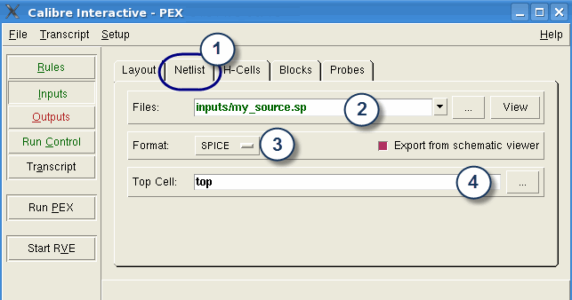

You can specify
to use source names instead of layout names in the extracted netlist.
Procedure
- Select the Netlist tab.
- Specify
the source netlist filename in the Files text box.
If you are
working with a schematic viewer, you can generate a new copy of
a SPICE or Verilog netlist by choosing the Export from schematic
viewer option. The schematic viewer must be running and the schematic
data must be loaded in the schematic viewer’s edit window.
- Select
the netlist file format from the Format dropdown list.
- Specify
the source netlist Top Cell name in the text box.
Figure 1. Providing Source Netlist
to Calibre Interactive